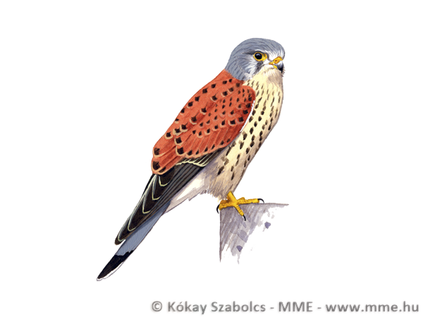

| 
Az egyik legismertebb ragadozómadarunk, ami még Budapest belvárosában is költ. Mivel fészket nem épít, mesterséges fészekalapokkal, illetve speciális költőládákkal lehet segíteni megtelepedését. Agrárkörnyezetben magasabb fákra, városokban tornyokra, magas épületekre célszerű, költőládát kihelyezni. A hazai állomány jelentős része elvonul, a telet tőlünk delre tölti, de északi madarak, valamint idősebb példányok nálunk telelnek át. |
Eurázsiában és Afrikában 12 alfaja él, a sivatgok, esőerdők és zárt erdők kivételével szinte mindehol, előfordul. Nálunk tipikusan mezőgazdasági területekhez tartozó fasorokban, elhagyatott dolmányos varjú vagy szarkafészekben, gyakran laza kolóniákat alkotva költ, saját fészket nem épít. Egyre jelentősebb számban telepszik meg a településeken is. Fészekalja 3-8 tojásból áll. A fiókák 28-30 nap alatt kelnek ki, és még egyszer ennyi időt a fészekben töltenek. Főleg rágcsálókat, elsősorban mezei pockot, de nyáron sáskát, szöcskét és más rovarokat is eszik, időnként gyíkokat és madarakat is fog.
| Elnevezés | |
| Magyar név | Füsti fecske |
| Tudományos név | Hirundo rustica |
| Angol név | Barn Swallow |
| Rendszertan | |
| Rend | Verébalakúak Passeriformes |
| Család | Fecskefélék Hirundinidae |
| Védelem | |
| Védelmi státusz | védett |
| Természetvédelmi érték | 50000 Ft |
Forrás: https://www.mme.hu/magyarorszagmadarai/madaradatbazis-faltin